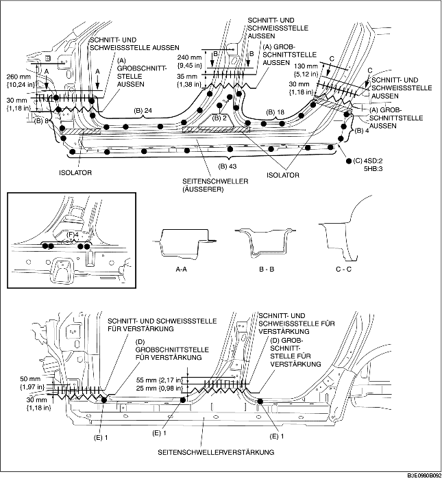

1. Bereich (A) grob vorschneiden, die 99 mit (B) markierten Stellen, die 2 mit (C) markierten Stellen (4SD) oder 3 Stellen (5HB) aufbohren und dann den (äußeren) Seitenschweller ausbauen.
2. Den Bereich (D) grob vorschneiden und die 3 mit (E) gekennzeichneten Stellen aufbohren.
3. Die 4 mit (F) markierten Stellen von innen aufbohren und die Seitenschwellerverstärkung entfernen.
